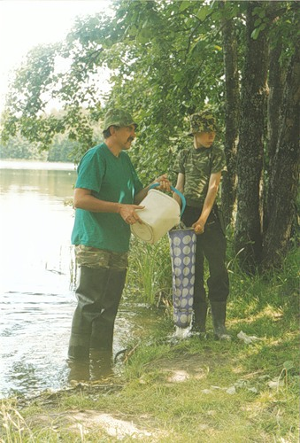
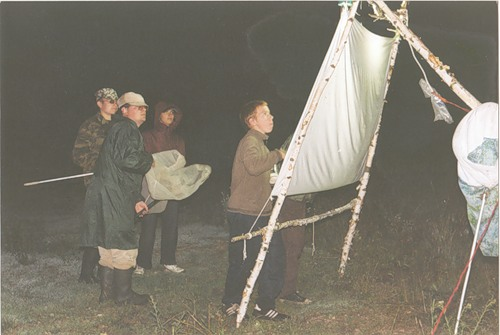
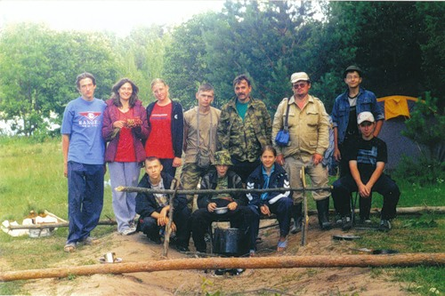
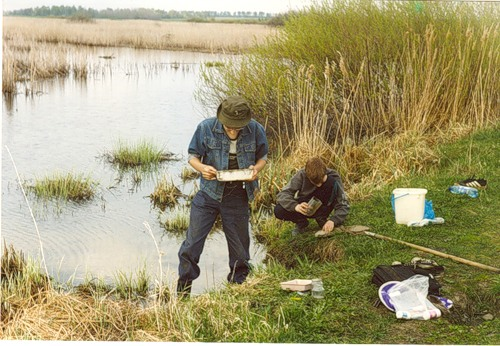
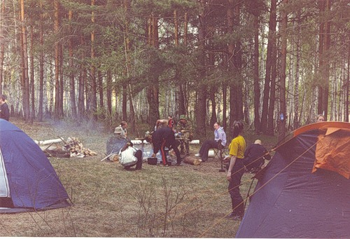
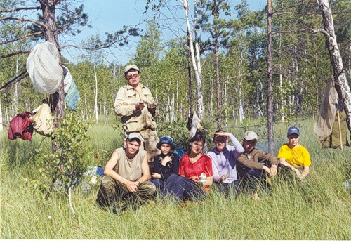

| |
2005 год

Взятие проб зоопланктона

Лов ночных насекомых, с. Чибирлей

Участники экологического лагеря

Взятие проб зообентоса и зоопланктона

Селитьбинское болото

Экологический лагерь, лето
|
Выездной экологический палаточный лагерь на территории Кузнецкого района стал областным, финансируется Управлением природных ресурсов и охраны окружающей среды Пензенской области. Закуплены палатки, спальные мешки для участников лагеря.
Весной проводилась экспедиция на Селитьбинское болото. Собирался практический материал для оологического анализа кладок птиц, взятие проб зоопланктона, зообентоса, отлов насекомых и мелких млекопитающих, сбор мхов.
Летний лагерь проводился на трех стационарных участках.
Первая стоянка была проведена вблизи уникальных родников Шурчавых в окрестности города Кузнецка. Обнаружены виды растений, занесённых в Красную книгу Пензенской области и РФ, отлавливались мелкие млекопитающие и насекомые, проводился сбор мхов, обучение участников лагеря определению растений.
Вторая стоянка проводилась в окрестности села Чибирлей Кузнецкого района. Учащиеся проживали на территории охотничьего кордона. Разрешение на проживание было получено у начальника Кузнецкого охотобщества – Саботирова Н.Ю. Проводилось обучение методам лова ночных насекомых на свет лампы накаливания, обучение по определению и гербаризации растений. Брались пробы зоопланктона и зообентоса, отлов мелких млекопитающих. Обнаружены впервые на территории Пензенской области редкие виды простейших и беспозвоночных животных, получены новые сведения о распространении охраняемых видов.
Третья стоянка проводилась на территории Двориковского водно-лесного комплекса. Проводилось обучение по гидрозоологии, ботанике, мониторингу состояния природных биогеоценозов, продолжался сбор практического материала.
В работе экологического лагеря принимали участие преподаватели ПГПУ им. В.Г. Белинского Полумордвинов О.А, Разживина Т.В., студенты, школьники Пензы и Кузнецка.
2001 год
2002 год
2003 год
2005 год
2006 год
2007 год
2008 год
2009 год
| |


{kind=link}
{kind=link}
{kind=link}
{kind=link}
{kind=link}
{kind=link}
{kind=link}
{kind=link}
{kind=link}
{kind=link}
{kind=link}
{kind=link}
{kind=link}
{kind=link}